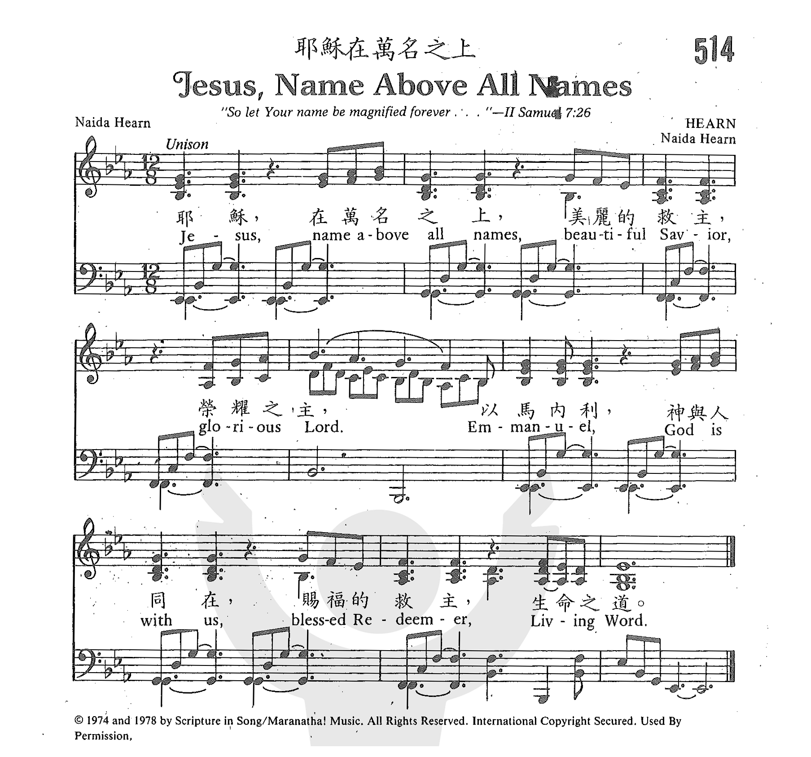

1394 Jesus, Names Above All Names (Naida Hearn)
●
耶穌，至高的聖名 安慰之歌
|
|
耶穌，至高的聖名 Jesus, Name Above All Names
曲：Naida Hearn 調：HEARN
格律：Peculiar Meter / 不規則
詞：Naida Hearn 譯：吳文秋
詩集：《世紀頌讚》129 |
|
Jesus, name above all names
Beautiful Saviour, Glorious Lord
Emmanuel, God is with us
Blessed Redeemer, Living Word
Jesus, name above all names
Beautiful Saviour, Glorious Lord
Emmanuel, God is with us
Blessed Redeemer, Living Word
Lord I praise your name
Jesus name above all names
Jesus, name above all names
Beautiful Saviour, Glorious Lord
Emmanuel, God is with us
Blessed Redeemer, Living Word
Blessed Redeemer, Living Word
Blessed Redeemer, Living Word
|
耶穌，至高的聖名，
美麗的救主，榮耀之君。
以馬內利，神與我同在，
賜福救贖主，永生之道。
|
|
https://www.zanmeishige.com/tab/26086.html?songbook=1&index=514



https://www.sheetmusicnow.com/products/jesus-name-above-all-names-p308288 |
|
|
|
媒體
.files/image002.gif) Printable scores: PDF
Audio files: MIDI, Recording
Wonderful Wonderful Jesus-Piano-Christopher
Tan
奇妙的奇妙的耶穌
Printable scores: PDF
Audio files: MIDI, Recording
Wonderful Wonderful Jesus-Piano-Christopher
Tan
奇妙的奇妙的耶穌
Jesus, name above all names
|
Short Name: |
Naida Hearn |
|
Full Name: |
Hearn, Naida, 1944-2001 |
|
Birth Year: |
1944 |
|
Death Year: |
2001 |
問: 在祈禱結束前為何要說「奉主耶穌基督的名求」?
奉主名祈禱的源起及意思
我們禱告都會於結束前說「奉主耶穌基督的名求」、「奉主耶穌基督的聖名求」或「奉主耶穌基督得勝之名求」等。
「奉某人的名」有尊重及藉著、靠賴某人之意。若我們奉某人的名去做一件事，表示做事之能力與權柄是因某人而得。主耶穌離世前吩咐門徒要奉祂的名字向神禱告（約十四13~14，十五16，十六23∼24、26）。「奉主耶穌基督的名求」指出了禱告的基礎是基督的救贖。耶穌的死與復活除掉了我們的罪，使我們與神重建關係，信徒從此能以神為父、得到兒子的名份。我們藉著耶穌就有資格向神禱告。
奉主名祈禱的重要性
奉主名求這話顯明了耶穌作祭司和中保的職分，會為人禱告
（約十六23∼26；約壹二1∼2
），
[1]亦是我們的信心宣告──除了基督以外，別無其他倚靠可以讓我們直接到神的座前獻上禱告。我們可以確信奉主名所作的禱告會得到神的垂聽，亦是帶有能力的。
然而我們必須留意祈禱的內容。按照希伯來文化，一個人的名字往往與其個人特質有關。因此當我們奉基督的名向神禱告時，禱告的內容應依據耶穌的屬性，要反映出耶穌是誰和祂的所言所行。
[2]因此我們要思想：若主耶穌置身此環境中會如何禱告呢﹖怎麼樣的祈禱會符合祂的心意呢﹖
主說奉祂的名無論求甚麼，都必得成全（約十四13~14）、會賜給我們（約十五16，十六23）及必可得著（約十六24）。當中所指的「求甚麼」並不包括自我中心的要求，而是指關乎耶穌的事，以叫父神得榮耀為前提（約十四13）。奉主名的禱告得以成就，是向與耶穌聯合的信徒（正如葡萄樹與枝子結合）所作的應許（約十五1~10）。禱告不是純為個人的好處，而是要按祂的旨意和帶領（約十四15；約壹五14）為神的榮耀及眾人的益處祈求。
耶穌靠著祈禱的幫助，面對不願意發生的事情。祂明白降世捨命是要完成神的救贖計劃。因此祂雖求神把苦杯挪去，但最後也祈求神不要照自己的心意，而求神的旨意成就。父神垂聽了祂的禱告，加給祂心靈的力量（路廿二43）。今日我們亦應把自己的各項計劃及需要呈獻到神面前，願神的旨意成就。面對人生的不同際遇（如患病、失業、失戀之中），也祈求神使我們明白祂的旨意及要我們學習些甚麼。明白了神的心意後亦須祈求順服，能在掙扎中有力量去堅持（如在試探中得勝（太二十六41）、於憂慮之中得釋放（腓四6∼7）等），使我們的生命可榮耀神、建立他人。
神喜歡聽我們透過禱告向祂傾吐的心事，亦喜歡聽到我們表示對祂的信靠。我們祈禱唸「奉主耶穌名求」時不要視之為咒語般把耶穌「擺出來」。主的名是超乎萬名之上（腓二9），是輕慢不得的。我們也不要視之為結束禱告的普通慣常用語。唸這話時必須思想奉主名來禱告的真義，以主耶穌的言行及教導來校正禱告的內容，祈求神的旨意在我們的生命中成就。
[1] 曾思瀚：《約翰福音──道成福音的耶穌》，蘇慧中譯（香港：明道社有限公司，2008），頁169。
[2] 同上書，頁152。
“JESUS, NAME ABOVE ALL NAMES”
“That the name of our Lord Jesus Christ may be glorified in you” (1 Thess.
1:12)
INTRO.:
A
song which is intended to glorify the name of the Lord Jesus Christ is “Jesus,
Name Above All Names” (#563 in Hymns
for Worship Revised). The text of stanza 1 was written and the tune
(Hearn) was composed by Naida Hearn, who was born at Palmerstown North, New
Zealand, in 1931. Many sources give her birth year as 1944, but someone who
used to attend the church where she did wrote that in “1980-83 she looked to be
in her early fifties; I think the birth date of 1930s would be correct than 1940
something.” Also, for some time, it was unclear whether it was actually North
Palmerston, on the northern island of this southwest Pacific island nation, or
the smaller town Palmerston, on the southern island. However, in 1994 someone
with a singing group from the United Kingdom visited Palmerston North, and
discovered that Naida Hearn lived there. Raised a Methodist, Hearn had been
married to a man who became a Jehovah’s Witness along with their son, and they
treated her as a non-person. Despite her unhappy marriage, she was an
inspiration to those around her and, attending a large Pentecostal Church, had
her Bible open on the table ready to lead a Bible study among those in her
community. As Naida was nearing her 40th birthday, she began studying the names
in the Bible referring to Jesus.
The 43-year old Hearn was doing her family’s laundry one December day in
1974. As is the case with many of the homes in her neighborhood, her family
had a “washhouse” behind the regular home, and she placed the list of names she
had made on the windowsill. It was a warm summer because in the southern
hemisphere the seasons are reversed from those in the northern hemisphere.
Standing at the sink, she had just been thinking about “Jesus, Name Above All
Names,” and wanted to keep her brain focused on Him as she did the wash, so all
the names of Jesus came into her head including “Emmanuel.” Perhaps it was a
King James or Wycliffe or Revised Standard Version of Matthew’s virgin birth
story that she had read, since most newer Bible translations have spelled it
“Immanuel.” She began to hum a tune and sing as she worked, starting with the
song’s first line. Then, she kept going, intoning some of the other names that
she had found in her Bible. She decided that she had something special after a
few moments, and left the wash to plunk out the melody on a piano. She thought
to herself, “Maybe I should write that down.” Once she had the finishing
touches on it, she went back to the laundry.
The song was copyrighted in 1974 by Scripture in Song. Of the twelve songs
she wrote, only this one has been published. A group of evangelists took her
song to Europe but taught it wrongly. She later said that she felt that when she
was singing about the Lord, the melody should never drop, so at the end of the
first half of the song in the words “Glorious Lord,” the note on Lord should
stay the same note and not go down. Apparently, the version with which we are
familiar was copyrighted in 1978. The text of stanza 2 was added for Hymns
for Worship Revised by co-editor Dane K. Shepard (b. 1951). Psalms,
Hymns, and Spiritual Songs dates this stanza 1987, but the song was not in
the original 1987 edition of Hymns
for Worship and appears only in the Revised edition after around 1994. The
arrangement attributed simply to “Stevens and Shepard’s Hymns
for Worship” in Psalms,
Hymns, and Spiritual Songs may also have been done by Shepard. Naida Hearn
died in 2001. Recently, while we were singing the song in an assembly, the idea
for a third stanza came to me.
Among other hymnbooks published by members of the Lord’s church for use in
churches of Christ, the song has appeared in the 1984 Rejoice
and Sing! published by Sweet Publishing and edited by Reid Lancaster,
consisting of “the best of both volumes of Rejoice
and Sing to the Lord, compiled by Reid Lancaster and Gary Mabry” in an
arrangement by Lancaster; the 1990 Songs
of the Church 21st C.
Ed. and the 1994 Songs
of Faith and Praise both edited by Alton H. Howard; the 1992 Praise
for the Lord edited by John P. Wiegand; and the 2010 Praise
Hymnal in an arrangement by Darrell Bledsoe and the 2010 Songs
for Worship and Praise both edited by Robert J. Taylor; in addition to Hymns
for Worship Revised.
The song expresses praise to Jesus for what His name represents.
I. Stanza 1 tells us that the name of Jesus is above all names
Jesus, name above all names:
Beautiful Savior, glorious Lord,
Emmanuel, God is with us,
Blessed Redeemer, Living Word.
A. Jesus, our Savior and Lord, has been given a name that is above every name:
Phil. 2:9-10
B. The prophetic name Emmanuel means “God with us”: Matt. 1:22-23
C. He is the Living Word: Rev. 19:11-13
II. Stanza 2 gives us a number of other names used in Scripture for Jesus
Jesus: Lord God Almighty,
Wonderful Counselor, Light of the world,
The Prince of Peace, Hope of glory,
Man of Sorrows, Lamb of God.
A. He is known as the Mighty God, Wonderful Counselor, and Prince of Peace: Isa.
9:6
B. He is also called the Hope of Glory: Col. 1:27
C. And among others, He is identified as the Lamb of God: Jn. 1:29
III. Stanza 3 explains to us why Jesus has such an exalted name
Jesus came down from heaven,
Was our example, walked on this earth,
Died on the cross for all people,
Rose the third day, reigns above.
A. Jesus came from heaven to this earth and lived as our example: 1 Pet.
2:21-23
B. He died on the cross for our sins: Rom. 5:8
C. He arose the third day and ascended to heaven where He reigns: Acts 1:1-3,
9-11
CONCL.:
This little hymn has become fairly popular even beyond the circle of
“Contemporary Christian Music” fans, having found its way into several more
traditional denominational hymnbooks, such as the Celebration
Hymnal, Hymnal
for Worship and Celebration, Rejoice
Hymnal, Sing
to the Lord, Worship
and Rejoice, Worship
His Majesty, and Worship
the Lord. The name of Jesus is something special for Christians.
Therefore, it should be our aim to praise “Jesus, Name Above All Names.”
Naida Hearn
-
Naida Hearn was brought up as a Methodist in Palmerston North, New Zealand.
As she grew in her faith, she became interested in the different Biblical
names given to Jesus and their meanings. She even made a list of those
names.
One day when she was about 30-years-old, Naida was contemplating the names
given to Jesus written on a piece of paper, as she did the washing. She
recalled in the book
The Sacrifice of
Praise: Stories Behind the Greatest Praise and Worship Songs of All Time by
Lindsay Terry: "While I was doing the family washing, the Lord gave me the
first line of a song. I began singing, 'Jesus, name above all names.' I
continued and sang the whole song just as you hear it today. I just opened
my mouth and all of the words came out, the melody and everything. I just
sang it."
"I left the washhouse and went down into the sitting room and worked the
song out on music paper. I then said, 'Lord, is that OK? Is it all right
like that? Yes, it was all right. I then went back to the washing. It was
just that simple. It was a straight-out lead from the Holy Spirit,
absolutely. I can't say I thought about this or I thought about that; I just
started on 'Jesus, name above all names,' and it carried on all by itself."
-
The song was soon being sung by her local congregation at New Life Church in
Palmerton North and in time it became a worldwide favorite. Naida said, "The
Spirit impressed on me that it was to be sung as a love song. It's all about
Him. You should sing it softly, slowly and reverently. This is what He
wanted."
https://www.songfacts.com/facts/naida-hearn/jesus-name-above-all-names
In Philippians
2:9–11 we
read that Jesus has the name above all names: “Therefore God exalted him to the
highest place and gave him the name that is above every name, that at the name
of Jesus every knee should bow, in heaven and on earth and under the earth, and
every tongue acknowledge that Jesus Christ is Lord, to the glory of God the
Father.” What did Paul mean when he said that God gave Jesus the name that is
above every name?
In this passage, the apostle appeals to believers to cultivate an attitude of
humility. He gives them an example to emulate, namely, Jesus Christ, who is the
ultimate model of humility. He says in verses 6–9 that Jesus, who is God and who
has always been God, did not hold tightly to His position of equality with God.
Instead, Jesus emptied
Himself or
made Himself nothing. He left His high rank in heaven to become a humble, human
servant. He set aside His rights and privileges as God to live a life of humble
service and obedience, even to the point of dying a horrible death on the cross
for sinners.
As a result of Jesus Christ’s self-emptying and self-humiliation, God exalted
Him to the highest place of honor. Jesus, who stooped down low, was raised by
the Father to His glorious position in heaven. The name that is above all names
is the supreme name—the divine name Lord.
This name acknowledges Jesus Christ’s absolute lordship as divine King of the
universe, and it brings with it the right to be worshiped.
It was humbling for the Son of God to become a man. Taking on the character of a
servant was even more humbling. But Jesus went a step beyond. He was willing to
die one of the most disgraceful forms of execution as a condemned criminal on a
cross. Following His humiliation and obedience, God elevated Jesus to His
rightful place of glory. After Christ’s victorious resurrection from the dead,
God bestowed honor upon His humble, obedient Son: “Because of the joy awaiting
him, he endured the cross, disregarding its shame. Now he is seated in the place
of honor beside God’s throne” (Hebrews
12:2, NLT).
When Paul said, “At the name of Jesus every knee will bow—in heaven and on earth
and under the earth” (Philippians
2:10, CSB),
the emphasis was on every creature in the universe acknowledging Jesus as Lord
over all creation. When he stated, “Every tongue will confess that Jesus Christ
is Lord” (verse 11, CSB), he meant that every living thing, both in heaven and
on earth, will honor Christ. Heavenly forces and demonic powers, people who
reject Christ and His faithful in the church—all will bow before Him (Isaiah
45:23–24).
Every tongue will acknowledge Jesus for who He is—the Sovereign Lord of the
universe.
The verses stating that all creation will honor Jesus Christ do not mean that
everyone will be saved. Instead, they point to the time when every being
acknowledges His authority.
-
The exalted Christ, who sits in the place of honor at God’s right hand (Colossians
3:1)
-
is Lord over all (Acts
10:36; Romans
10:12).
-
He has the supreme Name;
-
He is Lord of lords and King of kings (Revelation
17:14; 19:16).
-
He is the one Lord, “Jesus Christ, through whom all things were created, and
through whom we live” (1
Corinthians 8:6, NLT).
-
Jesus is Lord of both the dead and the living (Romans
14:9).
-
He is the Lord upon whom the church calls (1
Corinthians 1:2).
-
Jesus is our Mediator (Hebrews
3:1–6; 8:6; 9:15; 12:24),
-
Intercessor (Hebrews
7:24–25; Romans.
8:34),
-
Reconciler (Ephesians
2:12–17; Romans
5:1),
and
-
the One who gives us entrance into the Kingdom of Heaven (Hebrews
4:1, 11; 6:19–20).
Jesus has the name above all names because Jesus Christ is Lord! This name,
given to Him by the Father, affirms His divinity and supreme authority.
https://upchtw.weebly.com/uploads/4/6/8/6/46864003/%E4%B8%8A%E5%B8%9D%E7%9A%84%E5%90%8D%E5%AD%97.pdf
以羅欣 (Elohim)
Elohim
是一個希伯來文的眾數字。這字在舊約使用了超過二千次，是神的一個普通稱號﹔眾數是表示一種「華美的眾數」(plural of majesty)。
這字是從一個簡略的名字 El
而來﹔El
的字根很可能是「強」(比較創十七
1，二十八 3，三十五
11﹔書三 10)，或「卓越」的意思。
Elohim
一般譯為「神」。這名字強調神的超越性：神是超于一切而稱為神。有些人解釋 El
和 Elohim
的關系，Elohim
不過是 El
的眾數字，兩個名稱可以互用(比較出三十四
14﹔詩十八 31﹔申三十二：17、21)。在一些經文如以賽亞書三十一章
3 節，El
是專用來說明神和人的分別。El
表達出「神的能力和權勢，及作為仇敵的人類的無助」(比較何十一
9)。
主 (Adonai)
「主」這名詞在希伯來文是
Adonai (Adhon 或 Adhonay)，字根的意思是「主人」。聖經一般翻譯為「主」。Adonai
在舊約中用了 449
次，其中 315
次是和耶和華的名一起使用的。Adhon
強調一種仆人--
主人的關系(比較創二十四
9)，顯明一種神作為主人的權柄﹔至高的統治者神，
是有絕對權柄的(比較詩八
l﹔何十二 14)。Adonai
的意思應該是「一切的主」，或「至高的主」 (比較申十
17﹔書三 11)。Adonai
也可以用作個人的稱呼，意思是「我的主」。
耶和華 (Yahweh)
「耶和華」(希伯來文
Yahweh)是翻譯自一個四個子音字母的希伯來字 YHWH。這字原初的寫法是沒有母音的。正確發音今已不詳。一些英文譯本，曾將這名譯為
Jehovah ，但大部分現代英文譯本都將這字譯為「主」(Lord)。猶太經學者一般都將這字讀為
Adonai ，而不按正式發音將 YHWH
讀出，這是對這個立約的名字表示尊敬。
雖然這名字的來源及意義尚待商榷，但這個名稱(在舊約中總共用了
6,828 次)應該和一個動詞「to
be」(是)有關，神在出埃及記三章
14 至 15
節宣告說：「我是自有永有的。。」這個名字和基督所宣你的「我是」，有著特別的關系(比較約六
35，八 12，十
9、11，十一
25，十四 16，十五
1)﹔基督正是宣告自己是與耶和華平等的。
神用「耶和華」的名字，來表明他與以色列人的個人關系。亞伯蘭在接受神之約的時候(創十8)，也是要回應神這個名字。神以這名字帶領以色列人離開埃及，拯救他們脫離捆縛，救贖他們(出六
6，二十 2)。Elohim
和 Adonai
這兩個名字，都曾在其他文化體系中被人用過，但「耶和華」(Yahweh)一名，是給以色列人的一個獨特啟示。
(Compound Names) 復合名
神有很多個根據 El (或
Elohim) 和 Yahweh
而來的復合名詞。
El Shaddai
：翻譯為「全能的神」。此名在原文大概和「山」字有關，是表明神的能力。神也以這名字來表明自己是守約的神(創十七
l﹔比較 l
至 8
節，那里將約復述)。
El Elyon：翻譯為「至高神」。它強調神至尊的身分。神是在一切稱為神的以上(比較創十四
18至 22)。麥基洗德認識神是「至高神」，是天地的主人(創十四
l9)。
El Olam：翻譯為「永生神」。它強調神的不變本性(創二十一
33﹔賽四十 28)。
此外還有其他的複合名字，可以用來形容神的：
Yahweh - Jireh，「耶和華的預備」(創二十二
14)﹔ Yahweh - Nissi「耶和華是我的旌旗」(出十七
15)﹔ Yahweh - Shalom，「耶和華賜平安」(士六
24)﹔ Yahweh - Sabbaoth，「萬軍之耶和華」(撒上一
3)﹔Yahweh - Maccaddesheem，「耶和華是叫你們成為聖的」(出三十一
13)﹔ Yahweh - Tsidkenu「耶和華我們的義」(耶二十三
6)。
出處：http://www.pcchong.net/mydictionary1/general/TheNameofGod.htm
在舊約聖經裡，我們對出現了
6,518
次神的名字「耶和華」相當熟悉，但其中有七個地方提到神的別名，反映出神的屬性，你知道是那七個別名嗎？
一、耶和華以勒 Jehovah-Jireh（創廿二
13-14）
二、耶和華尼西 Jehovah-Nissi（出十七
8-15）
三、
耶和華沙龍 Jehovah-Shalom（士六
24）
四、耶和華拉法 Jehovah-Rapha（出十五
26）
五、
耶和華若業 Jehovah-Ra-ah（詩廿三
1）
六、
耶和華齊根努 Jehovah-Tsidkenu（耶廿三
6）
七、耶和華沙瑪 Jehovah-Shammah（結四十八
35）
耶和華以勒 Jehovah-Jireh（創
22:13-14）──耶和華必有預備
這名字源於神在摩利亞的山上試驗亞伯拉罕，叫他把兒子以撒獻為燔祭。因著亞伯拉罕全然的順服，神及時阻止並為他預備了獻祭的公羊。「亞伯拉罕就取了那隻公羊來、獻為燔祭、代替他的兒子。亞伯拉罕給那地方起名叫耶和華以勒、〔意思就是耶和華必預備〕
直到今日人還說、在耶和華的山上必有預備。」創 22:13-14
相信這名字最為我們熟悉，無論是經文或詩歌，都提醒我們神的供應和預備，讓我們對神有信心。但我們通常對這段經文的記述忽略了一個重點，就是「代替」，經文記載亞伯拉罕以神所預備的羔羊「代替」他的兒子，這正是預告神的救贖計劃，以祂的獨生子基督耶穌「代替」世人作為代罪羔羊，這是聖經中最早出現有關神學救恩論中的「代替」的觀念。所以，從經文的記載來說，「耶和華以勒」的意思是指著救恩方面的。
耶和華尼西 Jehovah-Nissi（出
17:8-15）──耶和華是我旌旗
這名字源於亞瑪力人在利非訂與以色列人之戰役，當時因著摩西在山上拿著神的杖舉手，約書亞帶領著以色列人在山下戰勝了亞瑪力人。「摩西築了一座壇、起名叫耶和華尼西。〔就是耶和華是我旌旗的意思〕又說、耶和華已經起了誓、必世世代代和亞瑪力人爭
戰。」出 17:15-16
照經文的記載，「尼西」的意思就是「旌旗」（Banner），到底「耶和華是我旌旗」是甚麼意思呢？關鍵在於下一句：「耶和華已經起了誓」，這是對應著上文摩西拿著神的杖舉手的動作，因為起誓的姿勢是舉起雙手。新國際版（NIV）
譯作：“For hands
were lifted up to the throne of the Lord.”這正是摩西向神舉手，向神禱告的描述。所以，「耶和華尼西」在這裡引申為我們向神禱告，神使我們得勝的意思。
耶和華沙龍
Jehovah-Shalom（士 6:24）──耶和華賜平安
這名字源於基甸與神相遇的事件。當神呼召基甸作士師與米甸人爭戰時，基甸因著信心不足，及對神的認識不夠而向神求神蹟，神憐憫他，並用火焚燒了他所獻的祭物，以致基甸因著面見了神而害怕被神擊殺，而得到神的安慰：「耶和華對他說、你放心、不要懼
怕、你必不至死。於是基甸在那裡為耶和華築了一座
壇、起名叫耶和華沙龍〔就是耶和華賜平安的意思〕這壇在亞比以謝族的俄弗拉直到如今。」士
6:23-24
對於信徒來說，經歷神所賜的平安是我們理所當然的經驗，但基甸的經歷提醒了我們，原來與神相遇都需要神的平安。因著人犯罪與神斷絕了關係，人與神相遇的確會被神擊殺的。但神藉基督耶穌的寶血洗淨我們，以致我們可以坦然無懼的與神相遇，這份平安豈不是顯得更寶貴！
耶和華拉法 Jehovah-Rapha（出
15:26）──耶和華是醫治你的
這名字在經文中並沒有出現，但其意思則記錄下來。就是以色列人在拉瑪因水不能喝而埋怨摩西，摩西求告神，神便將苦水變為甜；之後便將律例和典章指示他們：「你若留意聽耶和華你神的話、又行我眼中看為正的事、留心聽我的誡命、守我一切的律例、我就不將所加與埃及人的疾病加在你身上、因為我耶和華是醫治你的。」出
15:26
這是一個處境性的應許，就是神吩咐以色列人遵行祂的話，隨之而來的，就是神不將加在埃及人的疾病加在他們身上。從結 47:8
的「使水變甜」（原文作醫治）來看，這裡的「水就變甜」（25
節）亦帶有醫治的意思，所以是前後呼應的。有學者將經文解釋為當人回轉歸向神，神必醫治人屬靈的疾病。所以，這裡的醫治同是指向救恩方面。
耶和華若業
Jehovah-Ra-ah（詩 23:1）──耶和華是我的牧者
這名字在經文中同樣沒有出現，但其意思及經文是我們非常熟悉，就是詩人將自己經歷到神是他的牧者，怎樣帶領他過豐盛的一生而寫成這篇廣為人所誦讀詩歌。當然，要體會詩人的意境，單單讀第一節是不夠全面，現在就請你細心咀嚼詩篇
23 篇，然後對照你過往的人生，看看你是否經歷到神是你的牧者！
耶和華齊根努 Jehovah-Tsidkenu（耶
23:6）──耶和華我們的義
這名字出自先知耶利米論到神預言將要成就的救恩：「日子將到、我要給大衛興起一個公義的苗裔、他必掌王權、行事有智慧、在地上施行公平、和公義。在他的日子、猶大必得救、以色列也安然居住．他的名必稱為耶和華我們的義。」耶
23:5-6
這名字同樣沒有出現，但其意思很直接指到救恩的成就。今天，我們每一個接受救恩的人，都是活在「耶和華的義」中。
耶和華沙瑪 Jehovah-Shammah（結
48:35）──耶和華的所在
這名字在經文中同樣是沒有出現，但其意思就是神透過異象，啟示先知以西結有關將來新耶路撒冷的聖殿的樣式，也是以西結書最後一章最後一節的記載：「從此以後、
這城的名字、必稱為耶和華的所在。」結
48:35
那麼，這預言在甚麼時候應驗？「這一切的事成就、是要應驗主藉先知所說的話、說、『必有童女、懷孕生子、人要稱他的名為以馬內利。』（以馬內利翻出來、就是神與我們同在
。）」太 1:22-23
今天，你是否每天都體會到「耶和華的所在」這份莫大的喜樂呢？
出處：http://www.hkllc.org/head-news-2010-08-01.htm

大光_聖經人物每日靈修
http://www.glorypress.com/Devotional/character.asp
Elohim


經文:
創世記一 1∼31
鑰節:
上帝（Elohim）說：我們要照著我們的形象，按著我們的樣式造人……（創一
26）
參考經文:
創十四 17∼20；十六
13；十七 1；四十九
24；出六 3；賽十四
14；但四 34；35
提要
當我們查考聖經人物時，不要忘了藉著這些聖經人物去認識那位創造他們的上帝。而認識上帝最有價值的線索，便是查考聖經中稱呼上帝的名號。從這些名號中可以認識上帝的位格、本性和作為。聖經中只有一個名字是上帝自己取的，其他的名詞都是人對上帝的稱呼。
聖經中第一個對上帝的稱呼是「Elohim」，中文聖經翻成上帝、上主或神，這個希伯來字在舊約聖經中出現超過
2000 次，在創世記第一章對上帝的稱呼只用 Elohim
這個字。這一字雖是複數，然而每一次 Elohim
出現時，祂的形容詞和動詞總是單數，因此 Elohim
實在是單數，聖經藉著 Elohim
暗示有關三位一體上帝的奧秘。創世記一章 26
節中提到：
「我們」要照著「我們」的形象，按著「我們」的樣式造人，以賽亞書六章 8
節也提到：
「我」可以差遣誰呢﹖誰肯為「我們」去呢﹖在創造天地（創一；約一 1∼3）、道成肉身（路一
35）、基督受洗（約一 32）、十字贖罪（來九
14）中都可以看見三位一體和諧的上帝。
另外 Elohim
這個字是從動詞 alah
所演化過來的，它的意思是起誓立約，因此我們的上帝是一位立約並且信實守約的上帝。對祂自己，對祂的創造，以及對祂的受造物信守一定的約定，這也是整本聖經的主題，Elohim
的上帝決不背乎自己，祂乃是一位守約施慈愛三位一體的上帝。
默想
1.Elohim
這個名字是從一個字和二個字根合成的，其意義為：(一)祂是真實的，也是信實的。
(二)祂是強大有力的。(三)祂是獨一的上帝，但在位格上卻是多數的。
2.另外有幾個類似的名號也值得注意：(一)El
Elyon 意思是：至高者、至高的上帝。（創十18∼20；賽十四
14；但四 34，35）(二)El
Olam 意思是：永生的上帝。（創廿一 33）(三)El
Ro'i 意思是：看顧人的上帝。（創十六 13）(四)El
Shaddai 意思是：全能的上帝。
(創十七 1；四十九
24；出六 3)
祈禱
主啊！您有許多名字，代表著您的屬性，如此的美名配得受造之物日夜頌讚「因為除您以外，沒有一個良善的。」主啊！我的心稱頌您。
大光_聖經人物每日靈修
http://www.glorypress.com/Devotional/character.asp
.files/image012.jpg)
.files/image014.jpg)
Adonai 1
經文:
創世記十八 1∼15
鑰節:
說！我主（Adonai）我若在你眼前蒙思，求你不要離開僕人往前去。（創十八
3）
參考經文:
出廿一 5，6；賽五四
5；六十二 5；約十三
13，14
弗五 22∼32
提要
每一個上帝的稱呼都有其獨特的意思，Adonai（亞多乃）中文聖經大多譯為「主」。在創世記十八章中，亞伯拉罕稱呼上帝的使者為「我主
Adonai」。在亞伯拉罕的時代，奴僕稱呼主人為 Adonai，妻子稱呼丈夫也是
Adonai（創十八 12），當時奴僕和妻子同樣沒有什麼地位的，他們是主人和丈夫用重價買贖回來的。他們原不屬於自己的。
聖經中用 Adonai
這個字來稱呼上帝，乃是說明天上的上帝和地上的人之間的關係，就如
Adonai，祂要人順服祂、愛祂、服事祂，因為上帝是我們天上的主人，當亞伯拉罕遇見了Adonai，這位地上的主人就把自己降為僕人（創十八
3∼5）去服事那從天上來的
Adonai。
聖經不但用 Adonai
來說明我們和上帝之間是主人和僕人的關係，更是丈夫和妻子的關係。（賽五十四
5；六十二 5）主不但視我們為僕人，更是祂親愛的妻子，因此我們要盡心、盡力、盡意愛我們的主。如同妻子愛丈夫一般。（弗五
22∼32）
默想
1.出埃及記廿一章 5∼6
節中提到，倘若僕人愛他的主人，願終生服事他，可以穿耳洞作為記號，表明他是出於愛，出於自願服事他的主人。如今，我們是否也願意穿那屬靈的耳洞，表明我們不是因為懼怕，而是出於愛來服事我們的
Adonai﹖
2.約翰福音十三章 13∼14
節，主耶穌原是我們的 Adonai，都情願降為僕人，洗門徒的腳，因此我們也當彼此洗腳，像亞伯拉罕一樣，我們當學習服事我們的
Adonai。
3.如果上帝是我們的
Adonai，我們的主不但視我們為僕人更是妻子，祂必會供應我們一切所需的，祂也會保護我們不受傷害。（詩一百廿一）
祈禱
主啊！您曾用葡萄樹的比喻說：「我是葡萄樹，你們是枝子。」如此的形容「亞多乃」──我們的主，這樣的「大愛」叫我們俯伏於地，因為那是水乳交融密不可分的關係，「亞多乃」「亞多乃」我愛您。
Jehovah
大光_聖經人物每日靈修
http://www.glorypress.com/Devotional/character.asp
經文:
創世記廿八 10∼15；出埃及記三
7∼15
鑰節:
耶和華（Jehovah）站在梯子以上說，我是耶和華你祖亞伯拉罕的上帝，也是以撒的上帝……。（創廿八
13）
參考經文:
出十二 1∼30；利廿四
16；林後五 19
提要
Jehovah，中文聖經譯為耶和華，是上帝自稱的名字，也是最能說出上帝本質的名字。
耶和華這個名字首次出現在創世記二章
4 節，全部舊約聖經提過 6000
次以上。當摩西在西乃曠野被上帝呼召時，他向上帝說：你叫什麼名字﹖上帝回答說：「我是自有永有的。」 （I
Am Who I Am.），也可以解釋為「我就是我。」（I Am What
I Am.），我過去怎樣將來也怎樣，我是永不改變的，然後上帝說：「耶和華（Jehovah）是我的名。」（出三
13 ∼15）當雅各在逃往哈蘭的路上，在伯特利的曠野夢見一個梯子，從天上直通到地上，耶和華站在梯子以上。在夢中耶和華向雅各顯現，並且向他啟示和應許（創廿八
10∼15）。耶和華是啟示的上帝，祂向世人啟示祂是公義、聖潔、慈愛的上帝。祂與人立約，祂關切我們的罪，祂也願意與人建立密切的關係。
耶和華的名字是非常神聖不可褻瀆的，（利廿四
16）即使今天在猶太教的會堂中，他們也不敢使用 Jehovah，而用
Adonai 來代替，一方面是因為他們的敬愛，另一方面耶和華在希伯來文聖經上僅是
YHWH 四個神聖的字母，它們只有子音，沒有母音，因此不知如何發音。
默想
1.在雅各的異象中，我們看到耶和華上帝，從高天將梯子深入人間。今天，你是否也願意
讓這把天梯深入你的心中和生命之中﹖
2.耶和華是自有永有的上帝，祂親自向人啟示自己，祂是公義、聖潔和慈愛的上帝，祂與人立約並且守約，藉著耶穌基督的寶血，與人和好。（林後五
19）
3.猶太人至今仍不敢直呼耶和華的名字，我們常常因為上帝的慈愛而忽略了上帝的公義和聖潔，但願我們能存敬畏的心跟隨我們的主。因為敬畏耶和華是智慧的開端。
祈禱
主啊！您是自有永有的上帝，信心、順服、愛……一切都源自於您，認識您便能辨識自己的信心、順服及愛……等等的程度。
簡明歸正神學 - 基督論
http://www.pcchong.net/Christology/Christology2.htm
引言
“耶穌是基督”既然是基督教的信仰中心，沒有耶穌基督，基督教就會瓦解，更沒有任何存在的價值，所以我們首先必須要給“耶穌”、“基督”和相關的名字或稱號正名，不然“名不正則言不順”，我講的耶穌和基督不是你講的“耶穌”和“基督”，探討《基督論》就沒有什么意義了。
名字：
A。耶穌（Jesus）
英文 Jesus 其實來自拉丁文，希臘文是  (Iesous) ，音譯自希伯來文
(Iesous) ，音譯自希伯來文  （Jehoshua
耶何書亞，民十三：16），簡寫為 Joshua 約書亞，意思是“耶和華是拯救”（Jehovah is
salvation）。《馬太福音》記載耶穌降生的時候，主的使者向約瑟夢中顯現，說：“。。你要給他起名叫耶穌，因他要將自己的百姓從罪惡里救出來。”這正是耶穌名字的意義。在巴勒斯坦，“耶穌”這個名字很普遍，所以《聖經》特別指明是“拿撒勒人耶穌”（可一：24，約一：45，徒二：22等）。
（Jehoshua
耶何書亞，民十三：16），簡寫為 Joshua 約書亞，意思是“耶和華是拯救”（Jehovah is
salvation）。《馬太福音》記載耶穌降生的時候，主的使者向約瑟夢中顯現，說：“。。你要給他起名叫耶穌，因他要將自己的百姓從罪惡里救出來。”這正是耶穌名字的意義。在巴勒斯坦，“耶穌”這個名字很普遍，所以《聖經》特別指明是“拿撒勒人耶穌”（可一：24，約一：45，徒二：22等）。
除了《聖經》的記載，經外文獻有提及拿撒勒人耶穌嗎？猶太史學家約瑟夫（Flavius Josephus
，生于主前37年）在《猶太古史》18.63-64有這樣的記載：
“那時有一位叫耶穌的智者 - 倘若他果真是‘人’-
出現。因為他做了很多奇異不可置信的事，又是眾人的教師，人們都因他而欣然接受真理。他吸引了很多猶太人，同樣亦吸引了很多希臘人。這人就是基督。雖然彼拉多在我們的領袖的煽動下，把他釘在十字架上，以之懲辦，但那些從起初就愛他的人，對他始終如一。他（死后）第三天，便復活了，并向他們顯現﹔這些事，以及其他許多與他有關的奇事，上帝的先知們早已預言了。就是今天，那些以他的名稱為基督徒族類的，仍未完全消失。”
稱號：
A．基督（Christ）
“基督”是頭銜，希臘文是  （徒四：26），希伯來文是
（徒四：26），希伯來文是  ，音譯是彌賽亞（Messiah，約一：41，四：25），意思是受膏者（anointed
詩二：2，但九：25）。在舊約，祭司和君王在受職時都有膏油倒在頭上使成聖（利八：12，撒上十：1）。這里說的受膏者是誰呢？他是上帝透過先知對以色列人所應許的那位拯救者。以色列人因不守誡命，拜偶像，犯罪作惡，公然藐視上帝的聖潔和公義，所以上帝藉著先知宣告，他必執行在摩西律法中所定的，違命必受咒詛（申二十八：15-68），消滅他們。但上帝在震怒、施行審判時，不會忘記與大衛所立的永約，“我必堅定他的國位，直到永遠。”（撒下七：13）他應許一位受膏者（彌賽亞）要來拯救他們（如申十八：15，18，賽五十五：4，詩二：6-9，詩一百一十，亞九：9），故施洗約翰打發門徒問耶穌：“那將要來的是你嗎？”（太十一：3）。在新約時代，彌賽亞的觀念已不斷擴展，特別是在羅馬人的統治下，有些猶太人期待他來給世界帶來和平﹔有些期待他帶來公義的統治﹔但大多數人都期待一位民族英雄的彌賽亞，領導猶太軍隊征服全世界。猶太人不能接受耶穌是彌賽亞，就是因為“凡挂在木頭上都是被咒詛的。”（加三：13）他們認為被釘死在十字架上的耶穌不可能是彌賽亞。
，音譯是彌賽亞（Messiah，約一：41，四：25），意思是受膏者（anointed
詩二：2，但九：25）。在舊約，祭司和君王在受職時都有膏油倒在頭上使成聖（利八：12，撒上十：1）。這里說的受膏者是誰呢？他是上帝透過先知對以色列人所應許的那位拯救者。以色列人因不守誡命，拜偶像，犯罪作惡，公然藐視上帝的聖潔和公義，所以上帝藉著先知宣告，他必執行在摩西律法中所定的，違命必受咒詛（申二十八：15-68），消滅他們。但上帝在震怒、施行審判時，不會忘記與大衛所立的永約，“我必堅定他的國位，直到永遠。”（撒下七：13）他應許一位受膏者（彌賽亞）要來拯救他們（如申十八：15，18，賽五十五：4，詩二：6-9，詩一百一十，亞九：9），故施洗約翰打發門徒問耶穌：“那將要來的是你嗎？”（太十一：3）。在新約時代，彌賽亞的觀念已不斷擴展，特別是在羅馬人的統治下，有些猶太人期待他來給世界帶來和平﹔有些期待他帶來公義的統治﹔但大多數人都期待一位民族英雄的彌賽亞，領導猶太軍隊征服全世界。猶太人不能接受耶穌是彌賽亞，就是因為“凡挂在木頭上都是被咒詛的。”（加三：13）他們認為被釘死在十字架上的耶穌不可能是彌賽亞。
耶穌是那位受膏者嗎？在該撒利亞•腓立比境內，他問門徒：“你們說我是誰？”當彼得回答說：“你是基督，是永生上帝的兒子。”耶穌說：“這不是屬血肉的指示你的，乃是我在天上的父指示的。”（太十六：15-17）可見耶穌承認自己是基督，不過卻吩咐門徒不可對人說他是基督（太十六：20），以免猶太人對彌賽亞的誤解而引起騷亂。其實，當猶太人問他：“你若是基督，就明明地告訴我們。”從耶穌的回答：“我已經告訴你們，你們不信。。”（約十：24-25）可見耶穌在眾人面前也暗示了自己是基督。
耶穌受的是什么膏？他受的是聖靈的膏（約一：32，徒四：27，十：38），以擔負先知、祭司和君王的三項職分（太二十一：11，徒三：22，來十：10-14，路一：33，約十八：37）。
B．人子
在福音書里，耶穌多次（共83次）以“人子”自稱，如太十六：13，可十四：41，路九：58，約十二：23等。為什么耶穌以“人子”自稱？聖經學者有以下解釋：
一、耶穌自稱“人子”，說明他道成肉身，取了人的樣式，作為人的代表。當耶穌受洗，他對施洗約翰說：“。。你暫且許我，因為我們理當這樣盡諸般的義。”（太三：15）表示他藉著受洗的儀式，把自己“歸入罪人的身體”，他本來無罪的，卻借著洗禮與罪人認同了。換句話說，他現在背負了世人的罪，開始走上各各他的路上。所以，“人子”的稱號是說明他的使命。
二、與“神子”和“彌賽亞”的稱號相比，“人子”可以避免使猶太人曲解彌賽亞的性質和使命，讓耶穌有“多一點”的活動空間和時間來完成使命。另一方面，“人子”在舊約里有特別的意義。但七：13-14
“我在夜間的異象中觀看，見有一位像人子的，駕著天云而來，被領到亙古常在者面前﹔得了權柄、榮耀、國度，使各方、各國、各族的人都事奉他。他的權柄是永遠的，不能廢去，他的國必不敗壞。”這位人子就是彌賽亞。在耶穌與門徒的對話中也時常自比為但七：13-14
的“人子”，如：
太十六：27 “人子要在他父的榮耀里，同著眾使者降臨﹔那時候，他要照各人的行為報應各人。”
太十九：28 “我實在告訴你們：你們這跟從我的人，到復興的時候，人子坐在他榮耀的寶座上，你們也要坐在十二個寶座上，審判以色列十二個支派。”
太二十五：31 “當人子在他榮耀里，同著眾天使降臨的時候，要坐在他榮耀的寶座上。”
路二十一：27 “那時，他們要看見人子有能力，有大榮耀駕云降臨。”
C．神子（神的兒子）
按《路加福音》的記載，在耶穌降生之前，天使加百列已經對馬利亞說：“。。聖靈要臨到你身上，至高者的能力要蔭庇你，因此所要生的聖者必稱為神的兒子。”（路一：35）。在《約翰福音》，耶穌宣稱自己是神（父）的兒子（如約五：17）。耶穌在公會受審的時候也承認自己是神的兒子，路二十二：70
“他們都說：‘這樣，你是神的兒子嗎？’耶穌說：‘你們所說的是。’”從可三：11
“污鬼無論何時看見他，就俯伏在他面前，喊著說：‘你是神的兒子！’”，污鬼也知道耶穌是神的兒子。對猶太人來說，這等于“將自己和上帝當作平等”（約五：18），也等于說自己就是“基督”，因為太二十六：63
“。。大祭司對他說：‘我指著永生神叫你起誓告訴我們，你是神的兒子基督不是？’”
耶穌從來不稱神為“我們的神”（約二十：17），他只說“我的父”，這種子與父的關系是非常獨特的。在談到耶穌的神性和位格時，我會跟大家再探討這個項目。
D．主
一般上，“主”的稱呼相當于“先生”或有權柄的人，如“主人”。但耶穌在一些場合卻用了舊約“主”的特別銜頭，等于自稱是“神”，如太七：21，二十二：41-45，可五：19，路十九：31，約十三：13。。當時的門徒并不了解耶穌的這個用法，直到他從死里復活之后，他們才把舊約的“主”作為他的稱號，如約二十：28，徒二：36
“故此，以色列全家當確實地知道，你們釘在十字架上的這位耶穌，神已經立他為主，為基督了。”羅十：9
“你若口里認耶穌為主，心里信神叫他從死里復活，就必得救。”
何以舊約的“主”是神的代名詞呢？原來神的名字在希伯來文是由四個字音（YHWH）組成。由于十誡禁止人妄稱上帝的名（出二十：7），因此以色列人不敢直呼上帝的名字，他們讀聖經時就以“主”(Adonai)或“上帝”（Elohim）代替，久而久之，以色列人就忘記它是如何發音的。后來希伯來學者把“主”（Adonai
）的母音附點用在YHWH上面，于是發音就成為“雅巍”（Yahweh）或“耶和華”（Jehovah）。
E．救主（Saviour）或救世主（約四：42）
耶穌沒有自稱為“救主”，但這個稱號卻在聖經里用在他身上，如路二：11
“因今天在大衛的城里，為你們生了救主，就是主基督。”門徒在耶穌從死里復活后，他們就在多處（共22處）把這頭銜冠予耶穌，如徒五：31
“神且用右手將他高舉，叫他作君王、作救主，將悔改的心和赦罪的恩賜給以色列人。” 徒十三：23
“從這人的后裔中，神已經照著所應許的，為以色列人立了一位救主，就是耶穌。” 腓三：20 “我們卻是天上的國民，并且等候救主，就是主耶穌基督從天上降臨。”在希羅文化中，“救主”常作為一些神祗的頭銜，如宙斯（Zeus）；有時也用在帝王身上，如該撒（Caesar）被稱為“世人的拯救者”，羅馬皇帝哈德良（Hadrian）被稱為“救世主”。所以，使徒宣稱耶穌為“救主”，不但表示他超越異教世界的任何神祗，也等於公開挑戰當時帝國的統治者。這是導致基督徒後來遭受羅馬政權迫害的原因之一。
名字和稱號的聯用
A． 主耶穌，如可十六：19，路二十四：3，徒一：21，四：33等。
B． 主基督，如路二：11，羅十六：18，西三：24等。
C． 耶穌基督，如太一：1，約一：17，徒八：12，羅一：8等。
D． 基督耶穌，如徒三：20，羅三：24，林前一：2，加三：28等。
E． 主耶穌基督，如徒十一：17，羅一：7，腓一：2 等。
F． 主基督耶穌，如羅六：23，林前十五：31，提前一：2等。
G． 主救主耶穌基督，如彼后一：11，三：18等。
H． 神的兒子耶穌基督，如林后一：19，約壹一：3 ，三：23等。
今日默想/討論：
約壹三：23
“上帝的命令就是叫我們信他兒子耶穌基督的名，且照他所賜給我們的命令彼此相愛。”
請問你有遵守上帝的命令嗎？
願人都尊你的名為聖
https://blog.xuite.net/riveroflife/hyhai/116172277
(出3:14-16) 主耶和華「自有永有」（JAHWEH）的神阿，
我們感謝讚美你，因你是從亙古就有的神，你是無始、無終，不變、永恆的神，你是啟示摩西知道你名的神。
(創2:4) 主耶和華以羅欣（EL
OH IM）的神，
我們感謝讚美你，因你是創造者，你是創造宇宙萬物的神， (詩50:10-12) 因為樹林中的百獸是你的，千山上的牲畜也是你的。野地的走獸，也都屬你，世界和其中所充滿的，都是你的。(詩69:34)願天和地、洋海和其中一切的動物都讚美你。
主耶和華何先努（H
O S E N U ）的神，
你是造人者；(詩95:6)來阿！我們要屈身敬拜，在造我們的耶和華面前跪下。
(創14:
22) 主耶和華艾－艾揚（EL-ELYON）的神，
你是至高神、天地主，使亞伯拉罕得勝的神，一切豐盛都是從你而來，(瑪3:8-10)我們獻上所當納給你之供物，願你悅納。靠著至高神與我們同在，(太12:29) 我們能捆綁「壯士」，搶奪他家中的財物，成為神賜給我們的產業。
(創15:2)主耶和華阿當乃（ADONAI）的神，
你是我們的主，我們是你的僕人、願意忠心順從事奉你。
(創21:33) 主耶和華艾－奧林（EL
OLAM）的神，
你是永生神，感謝你賜給我們永生。(腓3:8)我以認識我主基督為至寶，認識耶穌基督就是永生。
(耶23:6) 主耶和華齊根努（Z
IDKENU）的神，
你是公義的神，(林前1:30) 感謝你賜給我們在基督裡的公義。
(士6:24)主耶和華沙龍（SHALOM）的神，
你是平安的神，感謝你賜給我們有平安， (約16:33)在世上我們有苦難，但你已經勝了世界，(賽26:3)堅心倚賴你的，你必保守他十分平安，因為他倚靠你。求父神的平安充滿我們的心，來引導我們每天的生活遵行神的旨意。
(詩7:17) 主耶和華艾揚（ELYON）的神，
你是賜福給我們的神，感謝讚美你！
(詩23:1) 主耶和華羅以（RAAH）的神，
感謝你是我們的牧者；我們必不至缺乏。
(創22:14)主耶和華以勒（JIREH）的神，
你是預備者，(腓4:19) 感謝你賜給我們一切豐盛的供應。
(出15:26)主耶和華拉法（RAPHA）的神，
你是醫治我們的神，(出23:25-26)我們願意留意聽耶和華 神的話，又行你眼中看為正的事，留心聽你的誡命，守你一切的律例。
(出17:15)主耶和華尼西（NISSI）的神，
你是我們的旌旗，我們的得勝。(詩20:7)有人靠車，有人靠馬，但我們要題到耶和華、我們神的名。(出17:11)我們何時舉手禱告，就何時得勝。讚美主！
(撒上1:3)主耶和華沙碧奧（SABOATH）的神，
你是萬軍之耶和華，使我們勝過仇敵，感謝讚美你。
(賽42:13) 主耶和華基播（GIBBOR）的神，
你是勇士，(士6:12) 使基甸和我們能成為大能勇士的主，讚美你。
(出31:13) 主耶和華麥加迪西肯（M
A K A D D E S H K E M ）的神，
你是聖潔的神，使我們成聖的神，感謝讚美你。
(賽12:2) 主耶和華耶－耶和華（JAH-JEHOVAH）的神，
(代上29:11-12)你是主耶和華，掌管一切的神，(弗1:11)你的主權掌管萬物、萬事，感謝讚美你。
(結48
: 35) 主耶和華沙瑪（SHAMMAH）的神，
你是無所不在的神，無論我們在何處，你都與我們同在，感謝讚美你。
(賽9:6) 主耶和華艾－沙代（EL
SHADDAI）的神，
你是全能的神，(耶32:17-19) 在你沒有難成的事，感謝讚美你。
(士11:27) 主耶和華穌發（SHAPHAT）的神，
你是審判人的神，(羅8:1) 我們在基督裡再不被定罪，感謝讚美你。
當我們讀新約聖經的時候，我們留意到新舊約之間有一個差異：
* 在舊約裡是 「求告Yahweh名」
約珥書2：32
" 到那時，凡求告 Yahweh 的名的就必然得救..."
* 在新約裡是 「求告主名」
使徒行傳2：21 「到那時候，凡求告主名的，就必的救。」
羅馬書10：13 「凡求告主名的就必得救。」
使徒行傳2：21和羅馬書10：13，都引用了約珥書2：32：
----------------------
我們需要明白，舊約用希伯來文寫成；而新約則用希臘文寫成。
-
但在新約，「Yahweh」這字被抽起了，「Yahweh」被取代為「主」。
在新約時代，非常少人用希伯來文的舊約聖經，因為希臘文已經成為通用的語言。大概在西元前250年間，希伯來文舊約聖經被猶太學者翻譯成希臘文。這譯本稱為七十士譯本，簡稱 LXX
(羅馬數字七十的寫法)。 使徒們在希臘的外邦人當中廣泛使用這七十士譯本。
在翻譯的過程中，猶太人避違說出神的名字，因此，每當他們讀到「Yahweh」一字的時候，就用希伯來文的"Adonai"（主）取而代之。「Adonai」翻譯成希臘文就是「kurios」；「kurios」 翻譯成英文就是 「Lord」，即中文「主」。
希臘文七十士譯本裡的約珥書2：23是這樣的："hos
an epikalesastai to onoma kuriou" ， 翻譯成英文就是： "whosoever
shall call upon the name of the Lord." ，也就是中文「凡求告主名的」。
因此，當我們看到新約引用舊約經文時，通常是引用自LXX 七十士譯本，而不是來自希伯來原文。
這就能解釋為何在使徒行傳2:21和羅馬書10：13，會讀成「凡求告主名的，就必得救。」
*
引用的經文來自70士譯本。
* 你所看到英、中文的「Lord - 主」字是從希臘文「kurios」 翻譯過來的。
彼得和保羅引用LXX版本的約珥書2：32。
彼得和保羅都是引用七十士譯本的約珥書2：32。
---------------------------------
但是我們看到，最初的希伯來原文的約珥書2：23 是這樣讀的：
到那時，凡求告Yahweh的名的就必然得救...
特別地講到求告Yahweh的名。
在翻譯的過程中，不幸的事情發生了！。
「Yahweh」被取代為希臘文「kurios」，「Yahweh」被取代為「主」這個名號。
不要讓這翻譯上的不幸和「不足」，攔阻我們求告Yahweh的名！
「Yahweh」 沒有寫在現今大多數的聖經譯本裡面。
「Yahweh」 被「Lord
- 主」字取代了。
這是其中一個原因神的名絕少在教會被提到。
這是何等的悲哀！「Yahweh」 是舊約聖經裡最常出現的一個名詞，有接近7000次之多，是舊約聖經裡最重要的名字。然而，這個獨特神的名字卻在我們的聖經翻譯中被完全抹煞掉了。「我是Yahweh」 這個神的最重要啟示消失了。
經過了二十個世紀，神的名字變得寂靜無聲。
今天，讓我們起來並專注求告 Yahweh 的名，來經歷到聖靈澆灌吧！
今天，讓我們起來，專注於求告Yahweh的名，以至在這末後的日子，讓神的靈澆灌神的子民身上，得蒙神最終的拯救。
主題：求告Yahweh？ 求告Yeshua？
但在新約，「求告主名」在有些經文是指「求告Yahweh的名」，有些則是指「求告耶穌的名」。
因此，到底我們是求告Yahweh，還是求告耶穌呢？兩者有分別嗎？這個問題困擾著我多年。
當我越思考默想神透過耶穌對人類的救恩計畫時，一個答案就越清晰地呈現出來。
在前三篇文章，我們看到三個重點：
· Yahweh 給耶穌起了“Yeshua”這個名字。
· Yeshua 的意思是 “Yahweh 拯救”。
· 在Yeshua身上，我們看見Yahweh的救恩。
明顯地，救恩的根本來源是出自Yahweh。Yahweh藉著Yeshua贖了我們的罪，展開和施行救恩，因此我們可以蒙Yahweh的赦免，得以與Yahweh和好。

.
彼得在使徒行傳4：12說：「除他以外，別無拯救；因為在天下人間，沒有賜下別的名，我們可以靠著得救。」
l 在此強調的是神的救恩
l 耶穌的名字Yeshua
是Yahweh 所賜
l 在天下人間，Yeshua是唯一的名，我們得拯救。
你不能藉著佛祖的名字找到救恩。你不能藉著教宗的名字找到救恩。你不能藉著你牧師的名字找到救恩。你不能藉著你教會的名字找到救恩。你甚至不能藉著你自己的名字找到救恩，好拯救自己。
**唯有藉著Yeshua，Yahweh拯救**
救恩必須藉著Yeshua。我們求告 Yeshua
是為了與Yahweh和好。基督徒在早期教會求告耶穌 (林前1：2；徒9：14，21，22：16；羅10：12
– 14) 來拯救他們，因為耶穌真的是神的羔羊，他完全的犧牲使人與Yahweh和好 (彼前1：18
– 21)。唯Yahweh使我們在洗禮中重生。Yahweh寬恕我們的罪，而且透過耶穌給我們新生命。
Yahweh 使耶穌復活並提他升天後，Yahweh在耶穌身上作了奇事，Yahweh把耶穌升格和賜給他榮耀，立他為主，為基督，並使他坐在自己右邊，因為耶穌無條件地順服神 (弗1：19
– 21、羅8：34)。這太奇妙了！ 好得無比！
你能感受到早期門徒心中的那份喜樂和興奮嗎？當他們求告耶穌，他們的心對Yahweh懷著感恩，Yahweh就是差派期待已久的彌賽亞來拯救他們的那位。
感謝神！彌賽亞真的來了！彌賽亞被釘死、埋葬，神又使他復活。彌賽亞完成了救恩的工作，實現了舊約的預言。Yahweh的名是應當稱頌的！Yahweh甚至把耶穌升到天上。Yahweh立基督作教會的頭，何等的不可思議！這正是為著我們的原故。
藉著求告耶穌，早期教會表達他們的信心向Yahweh，因祂使所有關於彌賽亞的預言應驗。藉著求告耶穌，教會降服於Yahweh和基督的主權，他們在天上坐在一起。縱然早期教會在求告耶穌，他們也是在求告Yahweh來拯救他們。透過Yeshua，Yahweh拯救。
早期使徒不是止于單單呼求耶穌。他們禱告時，他們呼求Yahweh。他們的禱告永遠都是直接向著神，而不是耶穌。在新約中的禱告和敬拜，Yahweh是他們呼求的名字而不是耶穌。彼得和保羅都告誡教會要求告Yahweh的名（使徒行傳2：21，羅馬書10：13，提摩太后書2：22）。
耶穌是我們的救恩中的救贖工作的中心焦點。耶穌卻不是我們禱告的焦點。我們總不該把二者混合為一。在禱告中，Yahweh永遠是中心焦點。這是舊約的真理，同樣是新約的真理。
求告主名是在禱告時間跟神親密相交。因此，我們必須學習在禱告中求告Yahweh的名。願Yahweh的名吸引我們，每一天，跟神建立越來越親密、越來越深的關係。
一. 聖靈的名字
神的靈（創世記1:2）(撒母耳記上10:10）
耶和華的靈（以賽亞書11:2）（撒母耳記上16:14）
耶穌的靈（使徒行傳16:7），
他兒子的靈（加拉太書4:6）
基督的靈（彼得前書1:11）
主的靈（使徒行傳8:39）
真理的靈（約翰福音14:16）
聖善的靈（羅馬書1:4）
在聖靈這些名字之中。頭四個名字，說到三位一體真 神的經文教義基礎。
聖靈是三位一體真神的第三位格。
- 這位聖靈，參與了天地宇宙的創造，“ 神的靈運行在水面上”。
- 聖經接著啟示我們，這位聖靈，就是耶和華的靈，而這位靈是
“智慧和聰明的靈，;謀略和能力的靈，知識和敬畏耶和華的靈”（以賽亞書11:2）
- 聖靈又是耶穌的靈和基督的靈。因此聖靈是三位一體的第三位格。
- 這位聖靈與我們發生關係，乃在於他是我們主的靈，是主耶穌基督要回到天上之前，應許我們要賜
下的，後來在五旬節的時候就賜下給新約的教會，使教會受了這位 “聖靈的洗”
或稱作 “聖靈的浸”。
- 這一次五旬節聖靈的賜下，就與教會永遠同在。而這一次的賜下，是在永恆裡一次的賜下，同時，也將聖靈的印記蓋在所有屬於基督教會的得救信徒的心上。
-
當一位罪人聽見了真理的道，就是得救得福音，而且信了基督，也接受了基督，他就立刻得救，而且同時就被歸入兩千年前五旬節聖靈的洗的經歷中，也受了這位聖靈的印記。
- 這位聖靈，從此就成為了我們 “主的靈”，住在我們心中，永遠與我們同在，沒有離開過我們。在日常生活中保護我們，施恩惠給我們，教訓我們，安慰我們。第6與第7格名字，說到聖靈的本質。
- 他是真理的靈與聖善的靈。真理的靈說到他是那啟示的源頭，他能 “參透萬事，就是
神深奧的事也參透了”（哥林多前書2:10）。
- 聖善的靈，說到他是聖潔與良善的靈。這兩個本質，與 神的形像互相吻合。以弗所書4:24說到
神的形像就是真理的仁義與聖潔。善惡的最高標準就是 神的仁義。
http://ling.fhl.net/cgi-bin/rogbook.cgi?user=ccany&proc=attach&bid=3&file=M.1313386181.A.1.pdf
基督教是唯一認定有聖靈的宗教，當你思想聖靈的教義時，要記得耶穌基督是聖經的中心主題。我們不知道聖靈的名字。聖經只告訴我們祂的存在，祂是誰，以及祂做些什麽。聖經沒有提聖靈個人的名字，這具有重要意義，祂保留祂自己的名字，以使耶穌基督的名和祂的工作得以被高舉。約翰福音15:26
A.祂的位格
不要用“它”來稱呼聖靈。
祂是內住在每一位信徒心中真實的位格。我們常以為只有看得見的人才是真實的人。事實上我們作為人的存在，並不是因為有肉體。人的肉身只不過是神賜給我們生活在地球上的一種方式。你不是一個“它”。當你死了，留下來的是身體被放進墳墓，但你已經離開了，那真正的位格一直都是肉眼看不見的。就像聖靈一樣從未被肉眼所見。
聖靈對人類的反應顯明祂是有位格的。
1)祂會擔憂。 “不要叫神的聖靈擔憂，你們原是受了他的印記，等候得贖的日子來到。”以弗所書4:30
2)祂會受試探。 “彼得說：你們為甚麽同心試探主的靈呢？”使徒行傳5:9
3)祂會被抗拒。 “你們這硬著頸項、心與耳未受割禮的人，常時抗拒聖靈，你們的祖宗怎樣，你們也怎樣。”使徒行傳7:51
4)祂會被褻瀆。 “凡褻瀆聖靈的，卻永不得赦免，乃要擔當永遠的罪。”馬可福音3:29-30
5)祂會被欺騙。 “亞拿尼亞！為甚麽撒但充滿了你的心，叫你欺哄聖靈”。使徒行傳5:3
聖經也有好多處稱聖靈為”神”。 祂具有神的屬性，如下列這些經文所揭示的。
1)無所不能- 路加福音1:35。基督降生時，祂是馬利亞和耶穌的保護者，祂也是我們的保護者。
2)無所不知- 哥林多前書2:10。在我們的生命中，祂知道所有的一切。
3)無所不在- 詩篇139:7-17。在我們的生命中，”祂永不離開你或離棄你。”祂一直與你同在。
4)永�琲瘋F- 希伯來書9:14。在我們的生命中，從新生到進天堂。祂一直在幫助我們”服事永生神。”
聖經也有幾個象徵和例子，這些是聖靈神性作為的呈像。
1)鴿子 – 約翰福音1:32。當祂服事耶穌時，鴿子是愛與憂傷的象征。
2)水 –
以賽亞書44:3;約翰福音7:38-39。你一旦得救了，就只有聖靈能滿足你靈性的饑渴。
3)油 –
撒母耳記上16:13。祭司的耳朵要先被油膏抹，使他能聽見。其次，祭司的大拇指也被膏抹，使他能為神行事。這就是聖靈在我們生命中的工作。
4)風 –
約翰福音3:6-8。聖靈安靜、不知不覺地在救恩和我們每天生活中運行。
5)火 –
使徒行傳2:3-4。火是潔凈、試煉和審判的象征。這是聖靈在我們生命中的作為。
6)衣服-
士師記6:34。耶和華的靈披戴在基甸身上。衣服是指保護。祂也是我們的保護者。
B.祂的施行
聖靈在整本聖經裡許多領域都有參與。這裡所列的是祂所參與的事工。
-
1)祂說話。
“他們事奉主，禁食的時候，聖靈說：「要為我分派巴拿巴和掃羅，去作我召他們所作的工。」使徒行傳13:2
-
2)祂代求。
“況且，我們的軟弱有聖靈幫助。我們本不曉得當怎樣禱告，只是聖靈親自用說不出來的嘆息替我們禱告。”羅馬書8:26
-
3)祂做見證。
“但我要從父那�堮t保惠師來，就是從父出來真理的聖靈，他來了，就要為我作見證”。約翰福音15:26
-
4)祂監督。
“聖靈立你們作全群的監督，你們就當為自己謹慎，也為全群謹慎，牧養神的教會，就是他用自己血所買來的（或譯：救贖的）。”使徒行傳20:28
-
5)祂引導。 “
只等真理的聖靈來了，他要引導你們進入一切的真理”。約翰福音16:13
-
6)祂指教。
“但保惠師，就是父因我的名所要差來的聖靈，他要將一切的事指教你們;並且要叫你們想起我對你們所說的一切話。約翰福音14:26
-
7)祂創造。
“起初， …地是空虛混沌，淵面黑暗;神的靈運行在水面上。 創世記1:1-2
-
8)在救恩中重生我們。
“從肉身生的就是肉身，從靈生的就是靈。『你們必須重生，』你不要以為希奇，風隨著意思吹，你聽見風的響聲，卻不曉得從哪�堥荂A往哪�堨h;凡從聖靈生的，也是如此。」約翰福音3:3，5-8
-
9)祂使耶穌從死�奡_活。
“然而，叫耶穌從死�奡_活者的靈，若住在你們心�堙A那叫基督耶穌從死�奡_活的，也必借著住在你們心�堛爾t靈，使你們必死的身體又活過來。”羅馬書8:11。
-
10)祂完成救恩。
“你們中間也有人從前是這樣，但如今你們奉主耶穌基督的名，並借著我們神的靈，已經洗凈，成聖，稱義了。”哥林多前書6:11
-
11)祂保全救恩。
“你們既聽見真理的道，就是那叫你們得救的福音，也信了基督;既然信他，就受了所應許的聖靈為印記。”以弗所書1:13
-
12)祂引領信徒。
“因為凡被神的靈引導的，都是神的兒子。”羅馬書8:14; 加拉太書5:18
當我們過基督徒生活時，我們必須知道是聖靈這實在的位格，每天在服事我們的事實。聖經告訴我們，我們乃是被聖靈充滿或掌控的。如果我們活在罪中，祂就無法掌管我們的生活。你可能在思想或行為上犯罪，但當你讓聖靈擔憂時，你必須馬上遵行約翰一書1:9，使你不致失去與神的關系
，“我們若認自己的罪，神是信實的，是公義的，必要赦免我們的罪，洗凈我們一切的不義”。基督徒在這世上面對的最大危險是容忍罪進入生命中。我們最大的敵人不是破產、疾病、孤單、惡言攻擊、逼迫或其它眾多困難。罪才是會破壞我們與神的團契相交、消滅聖靈、容忍魔鬼侵入、引導我們走向滅亡之路。加拉太書5:19-21讓我們看到一系列我們應當小心的事。我們要清楚認識撒旦是我們靈魂的仇敵。這是我們每天要面對的爭戰。以弗所書6:11-18。但勝利必會來到，“我們若在光明中行，如同神在光明中，就彼此相交；他兒子耶穌的血，也洗凈我們一切的罪。”約翰一書1:7。每天時刻緊緊跟隨神，就能使我們與天父團契相交。及時的認罪是抵擋我們靈魂仇敵的不二妙法。把約翰一書多讀幾遍，並背熟第一章，這是活出基督徒得勝生活的秘訣。
C.祂的作為
每一個基督徒都可以在他的生命中產生兩種結果。但只有一種果子會經常表現出來。
要記得，作為一個基督徒你可以根據你的渴慕而產生兩者中的一種果子，可以是聖靈的果子，也可以是肉體的果子。這果子端賴誰在控制你的生命。“我說，你們當順著聖靈而行，就不放縱肉體的情欲了，因為情欲和聖靈相爭，聖靈和情欲相爭，這兩個是彼此相敵，使你們不能作所願意作的”加拉太書5:16-17。你生活在這世上，每天都在結果子，但問題是結哪一種果子呢？世界的壓力引誘你去滿足肉體的私欲，試探無處不在：廣告、媒體、雜誌，到處都有。撒但是今世之神。約翰一書5:19這些肉體的作為就列在加拉太書5:19-21。非基督徒沒有選擇余地，只能生產出肉體的果子。從人的角度看，他可以行善事，甚至從事宗教，社會工作，為世人所贊賞，但在神眼中看來，卻沒有永�睇靋�。
聖靈的工作就是在你生命中產生聖靈的果子。
只有重生得救的基督徒才會有這種果子。請記得這果子在聖經中是單數，你無法選你的果子，這是祂的果子，祂乃根據你與神之間的屬靈關系來決定是要結果或不結果。當罪進入時，果子就從聖靈的果子變成肉體的果子。在生命中結出正確的果子應當是每一個基督徒的渴望。當我們降服於聖靈時，祂就會在我們生命中作工，結出祂的果子來。如果祂不是我們所有一切的主，祂根本就不是主。加拉太書5:22-24
我們並不是努力爭取得勝的地位來結出聖靈的果子。
我們乃是從我們已經在基督�堭o勝的地位來進行。在你每天的生活中，都必有爭戰以結出果子。但我們的得勝在於
“凡屬基督耶穌的人，是已經把肉體連肉體的邪情私欲，同釘在十字架上了。”加拉太書5:24。我們必須了解，勝利不在乎我們自己，而在乎基督。肉體釘死在十字架上不是我們作甚麽，而是因為那位在我們�堶悸滿C我們也在祂�堶惘茯△菕C
“我已經與基督同釘十字架，現在活著的不再是我，乃是基督在我�堶惇△菕A並且我如今在肉身活著，是因信神的兒子而活；他是愛我，為我舍己。 ”加拉太書2:20。
當我順服聖靈的掌管，我就可以天天得勝。你也許會使聖靈擔憂，但祂決不離棄你。因為
“你們原是受了他的印記，等候得贖的日子來到。”以弗所書4:30。祂在你�堶悸漱漲磹O永遠的。直到我們抵達天國。
D.祂的供應
作為一個基督徒你是否曾問自己，“我能作甚麽？”如果我給你一部新車，我會期待你作甚麽？我會不會希望你看看，把新車放在展覽室，讓人們也能來參觀、談論、告訴朋友、照個像；或者我希望你進入車子，駕駛車子？很明顯地，車子的目的是要駕駛，也許是開車上班或接朋友，也許只是讓你開車到郊外兜風。
神賜給你永�琤糽R的禮物，就是聖靈的內住和屬靈的恩賜，就是要你為祂而使用。
“恩賜原有分別，聖靈卻是一位。職事也有分別，主卻是一位。功用也有分別，神卻是一位;在眾人�堶情A運行一切的事。聖靈顯在各人身上，是叫人得益處”
哥林多前書12:1,4-7
這章聖經還有其它章節都列出聖靈賜給信徒的恩賜。
我們知道每個信徒都至少有一項恩賜能為主所用，羅馬書12:4-8。請問，你認為主希望我們如何對待祂所賜給我們的恩賜呢？當你在世上生活，並透過聖經，你知道你不能看到別人得恩賜而忌妒。要知道聖靈給你的恩賜是獨特的，因為你是祂寶貝的兒女。
“但如今神隨自己的意思，把肢體俱各安排在身上了。”哥林多前書12:18。你也許會問 “我的恩賜是甚麽？” 我們不知道，但你求問祂，就可以找出你的恩賜並善加應用。
有一些恩賜對今天的信徒已不適用。
讓我們記得使徒行傳這本書是教會開始建立時的轉型階段。使徒行傳是一本轉型的書。因此，我們不能把教義建立在這本書上，除非新約其它部份也肯定。當時因為信徒沒有新約，神就在五旬節用神跡、啟示和方言來證實祂的大能。這是為了快速傳播救主已臨到、救贖人類的新時代已來臨的福音。這是在五旬節無法重復的神跡。只有一個五旬節，就好象只有一個加略山、一次身體復活和一次升天一樣。在五旬節當天，人們從世界各地憑著他們的語言聽到福音，以便他們去告訴他們的百姓，世人救主已經從死�奡_活。使徒行傳2:4;22-24。今天，方言的恩賜不再活躍，我們擁有幾乎世上所有語言的聖經。我們只需要用我們已有的語言去遵行大使命。
“你們往普天下去，傳福音給萬民（萬民：原文是凡受造的）聽。”馬可福音16:15。
知識的恩賜今天也不適用了，因為我們有神完整的啟示寫成的新約。
同樣的理由，預言的恩賜也停止了。這些恩賜都是為了那一段特別的時期，新約還未寫成，不像我們今天。神透過舊約與祂的子民溝通，到新約完成後就直接與他們溝通，就如哥林多前書13:10說到新約的來到，“等那完全的來到，這有限的必歸於無有了。”
雅各書1:25加以肯定，“惟有詳細察看那全備，使人自由之律法的，”指的是新約。神的話現在已寫成，就不再需要以上的恩賜。事實上，如果有進一步的啟示或預言，或加添神的話，這將會帶來審判，如啟示錄22:18-19所說，“我向一切聽見這書上預言的作見證，若有人在這預言上加添甚麽，神必將寫在這書上的災禍加在他身上；這書上的預言，若有人刪去甚麽，神必從這書上所寫的生命樹和聖城，刪去他的份。”
E.聖靈的印記
聖靈本身就是印記
1)是所有權柄的印記。 提摩太後書2:19
2)是身份的印記。
以弗所書1:13-14
3)是安全保障的印記。 以弗所書1:13-14
4)是成交的印記。印記肯定法律上的轉移。 耶利米書32:10
5)是公義的印記。
羅馬書4:11
6)是形象的印記。有圖印的戒指/印章會在蠟上留下印象，我們一旦受聖靈的印記，祂的形象就印在我們身上。
哥林多後書1:22。
這是定金的印記。定金是為了以後要付全款而先付的款項。聖靈的內住就是神的“定金。”
“不要叫神的聖靈擔憂，你們原是受了他的印記，等候得贖的日子來到。”以弗所書4:30。祂內住在你�堶惇O永遠的，直到我們登上天國。
F.聖靈的洗
“浸禮”這個字的意思是“浸泡，認同”的意思。聖靈的洗就是聖靈在我們得救時，把我們放在基督的身體中。“基督的身體”與“教會”是同義詞。包括所有重生的信徒。“我們不拘是猶太人，是希利尼人，是為奴的，是自主的，都從一位聖靈受洗，成了一個身體，飲於一位聖靈。”哥林多前書12:13。這是五旬節的應許，也是教會的開端。
聖靈的洗不是能力的賦予，也不是一種經驗，而是聖靈本身的一種作為，聖靈作為一個媒介，把你放在基督的身體中。使徒行傳1:5。“但不多幾日，你們要受聖靈的洗。”這是說到五旬節即將來臨的教會的開端。五旬節之前，聖靈臨到人們，祂“與你同在”。而五旬節之後，祂要常常“在你們�堶情芋C祂與所有蒙救贖的人永遠同住。每一次用到“聖靈的洗”這幾個字，都是集體的指一群人，從未指個人。當你在聖經中看到“聖靈的火施洗”,這是一幅對比的圖像
– 得救贖或受審判。你只能得其一，取決於你與耶穌基督的關系。馬太福音3:11-12;路加福音3:16-17。
有些人說他們經歷過“聖靈之洗”以及能說方言。有些人又說他們得著醫治、行神跡、趕鬼的能力；但是他們都是假先知、假教師。請看彼得後書第2章。他們是按自己的經驗來解釋聖經，而不是按聖經解釋他們的經驗。魔鬼也能藉著神跡奇事來誘惑人，這都不是來自神。因此有真實的靈，也有欺騙的靈。（約翰一書4：1-6）
今天信徒應用聖靈的恩賜時，必須是出於更美好的動機。哥林多前書13:2
“我若有先知講道之能，也明白各樣的奧秘、各樣的知識，而且有全備的信叫我能夠移山，卻沒有愛，我就算不得甚麽。”愛必須是引發我們應用基督徒恩賜的驅動力。我們必須舍棄一切為主耶穌基督，隨時隨地，不管任何工作，任何主呼召我們作的見證，都樂意為祂所用。有關聖靈的位格與工作，還有很多可以分享的，當我們在基督�媟U長大成熟，我們就愈能了解祂在我們生命中的同在與作為。